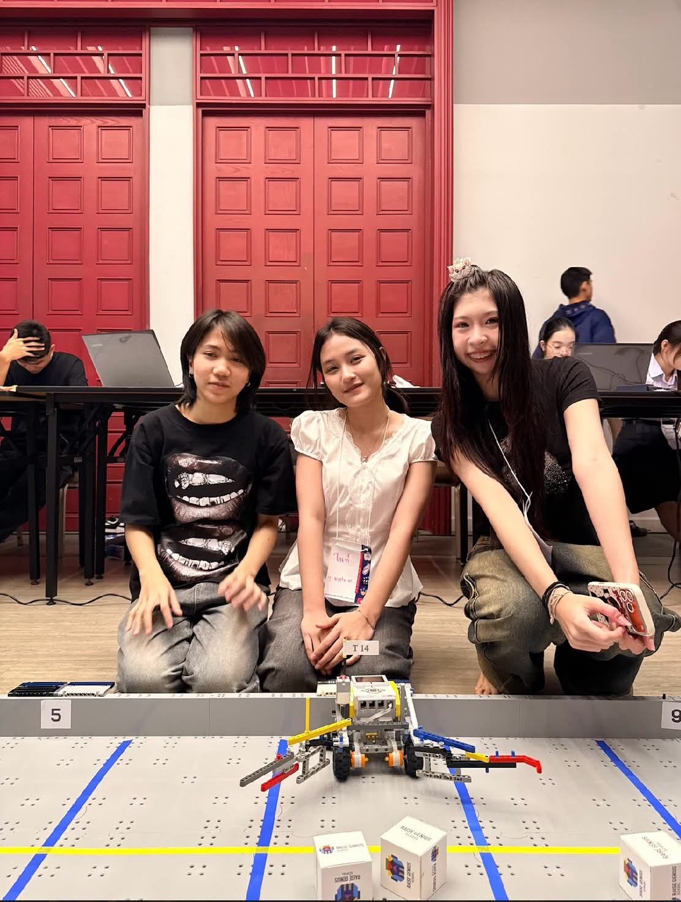
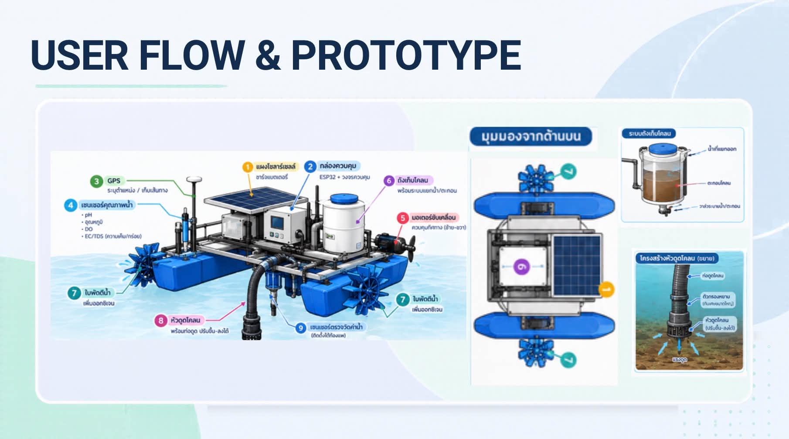

กลับไปสู่หน้าเดิม
สมัคร Spkar Hack
Raise STEM-Coding & Robotics Camp


การเข้าร่วมค่ายครั้งนี้เปิดโอกาสให้ดิฉันได้ลงมือประกอบและพัฒนาหุ่นยนต์ด้วยตนเอง ตั้งแต่การเขียนชุดคำสั่งควบคุมการทำงาน ไปจนถึงการปรับแต่งให้หุ่นยนต์สามารถเคลื่อนที่ตามเส้นทางที่กำหนดและผลักสิ่งของได้ตามเป้าหมาย นอกจากนี้ ยังได้เรียนรู้การใช้งานบอร์ด Arduino และการประยุกต์ใช้ในการควบคุมระบบหุ่นยนต์ ซึ่งช่วยเสริมสร้างทักษะด้านการเขียนโปรแกรม การคิดวิเคราะห์ และการแก้ไขปัญหาอย่างเป็นระบบ

โครงการนี้เปิดโอกาสให้ดิฉันได้พัฒนาเครื่องดูดขี้ตมเพื่อแก้ปัญหาให้แก่ชุมชนบ้านศาลาหุม ภาคใต้ ซึ่งประสบปัญหาขี้ตมสะสมจนน้ำตื้นเลี้ยงปลาไม่ได้ ออกซิเจนในน้ำน้อย และความเค็มแปรปรวนจนทำให้ปลาตาย โดยดิฉันได้ร่วมออกแบบระบบแพลอยน้ำดูดตะกอนอัจฉริยะที่ควบคุมด้วยบอร์ด ESP32 ร่วมกับเซนเซอร์วัดคุณภาพน้ำและใบพัดเพิ่มออกซิเจน รวมถึงออกแบบแอปพลิเคชัน AquaSense เพื่อตรวจสอบค่าน้ำและแจ้งเตือนความผิดปกติแบบเรียลไทม์ ทำให้ได้เรียนรู้การออกแบบระบบที่เชื่อมโยงทั้งฮาร์ดแวร์และซอฟต์แวร์เพื่อแก้ปัญหาจริง รวมถึงพัฒนาทักษะด้านการคิดวิเคราะห์ การวางแผน และการแก้ไขปัญหา